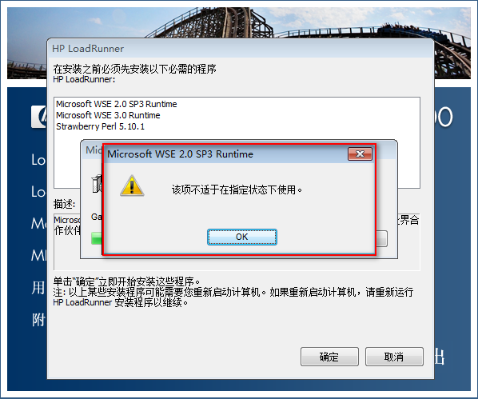
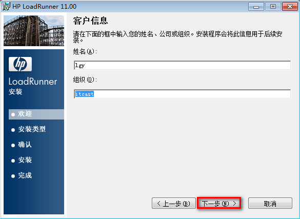
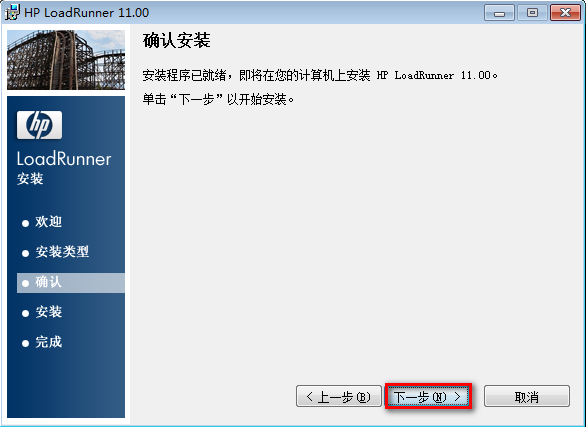
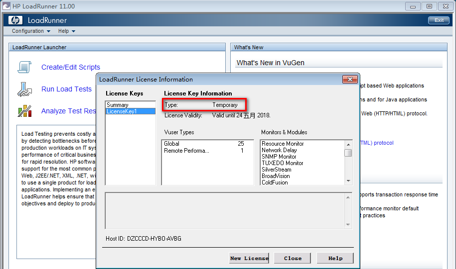
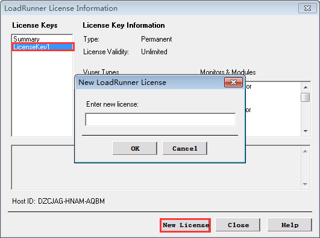

LoadRunner 11安装
一、安装步骤
- 解压 - Software_HP_LoadRunner_11.00_T7177_15013.iso
- 启动安装程序 - setup.exe(提示：权限-鼠标右键->以管理员身份运行)；
- 根据安装提示进行配置并点击下一步操作,直到安装完成；
- 修改注册许可证
注意：
1). LoadRunner版本与操作系统的对应关系：
① LoadRunner 11版本推荐使用64位Windows 7旗舰版系统；
② LoadRunner 12版本推荐使用64位Windows 10专业版或教育版系统；
2). 自动安装LoadRunner必要的依赖文件时，如遇要求重启电脑，则重启后再进行安装即可；
3). 最好新建文件夹(如：C:\HP\LoadRunner)并且避免安装路径中有中文和空格；
(原因：如果默认安装路径，则有可能导致LR自带的机票网站会出现登录异常；)
二、安装图解
2.1 解压Software_HP_LoadRunner_11.00_T7177_15013.iso后文件

鼠标右键->以管理员身份运行：setup.exe
2.2 点击安装选项

点击：LoadRunner 完整安装程序
2.3 确定安装loadrunner依赖程序

点击：确定
2.4 异常【重要】

处理办法：重启电脑
2.5 开始安装LoadRunner

点击：下一步
2.6 许可协议

点击：我同意、下一步
2.7 客户信息

处理：默认或根据需求填写 点击：下一步
2.8 选择安装文件夹【重要】

处理：新建指定文件夹(避免中文及空格、避免默认路径) 点击：下一步
2.9 确认安装

点击：下一步
2.10 安装中

处理：耐心等待
2.11 安装完成

点击：完成
2.12 查看-安装完成文件

点击：开始菜单-HP LoadRunner
3. 注册许可证-使用图
3.1 修改前

说明：使用用户类型：临时
3.2 修改后

说明：使用用户类型：永久
3.3 操作步骤
lf_file.rar文件下载
- 下载lf_file.rar文件,
- 将 lm70.dll、mlr5lprg.dll 两个文件复制并替换到LR11安装目录下的bin文件夹下
- 运行 lr删除注册表.exe 文件
- 输入注册信息(New License，以下注册码任选其一即可)
1). Global-100的注册码：AEACFSJI-YJKJKJJKEJIJD-BCLBR
2). Web-10000的注册码：AEABEXFR-YTIEKEKJJMFKEKEKWBRAUNQJU-KBYGB
3). 最高支持6.5w个并发的注册码：AEACFSJI-YJKJKJJKEJIJD-BCLBR
1) lf_file.rar文件

2) 复制替换 lm70.dll、mlr5lprg.dll(位置：lr安装目录下bin目录)

3) 运行 lr删除注册表.exe 文件

4) 输入注册信息(New License)
启动注册窗口


